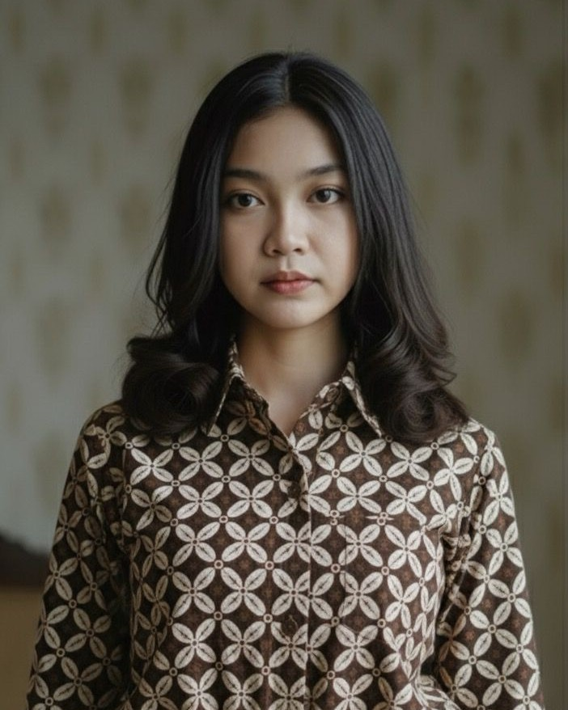

Batik Kawung
Batik kawung adalah salah satu motif batik klasik yang berbentuk lingkaran lonjong menyerupai buah kawung (aren/kolang-kaling) yang disusun simetris seperti bunga. Motif ini termasuk batik keraton yang sarat makna filosofis.
- Asal: Berasal dari keraton Jawa, terutama Yogyakarta dan Surakarta.Berasal dari keraton Jawa, terutama Yogyakarta dan Surakarta.
- Makna: Kesucian, keseimbangan hidup lahir dan batin, dan kekuatan batin & pengendalian diri.
- Jenis: Kawung Bribil (ukuran sedang-besar, umum dipakai masyarakat bangsawan).